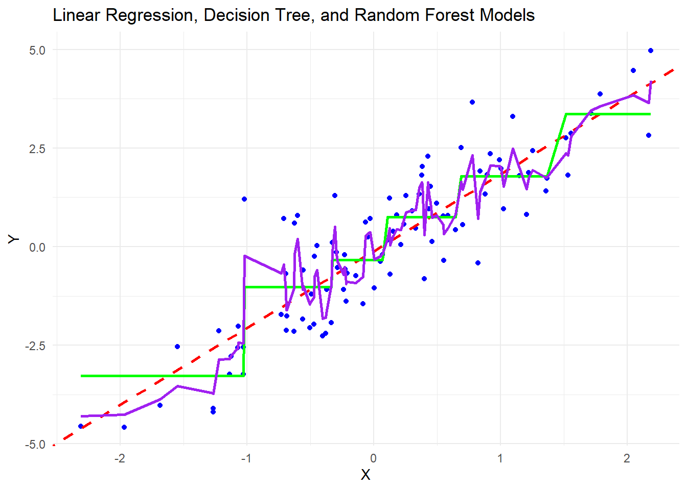
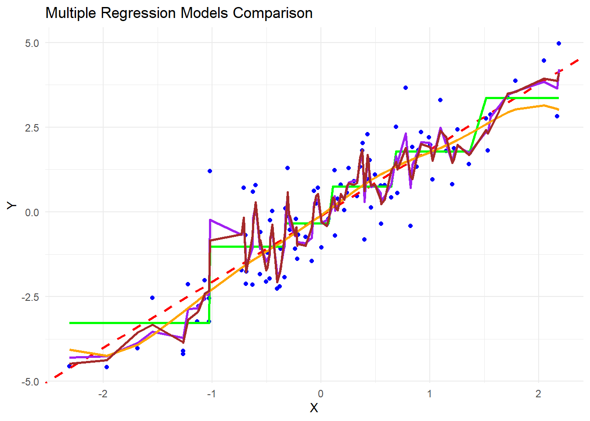

# Load necessary libraries
library(ggplot2)Warning: package 'ggplot2' was built under R version 4.3.2library(dplyr)Warning: package 'dplyr' was built under R version 4.3.2
Attaching package: 'dplyr'The following objects are masked from 'package:stats':
filter, lagThe following objects are masked from 'package:base':
intersect, setdiff, setequal, unionlibrary(caret)Warning: package 'caret' was built under R version 4.3.2Loading required package: latticelibrary(randomForest)Warning: package 'randomForest' was built under R version 4.3.2randomForest 4.7-1.1Type rfNews() to see new features/changes/bug fixes.
Attaching package: 'randomForest'The following object is masked from 'package:dplyr':
combineThe following object is masked from 'package:ggplot2':
marginlibrary(rpart)Warning: package 'rpart' was built under R version 4.3.2library(e1071) Warning: package 'e1071' was built under R version 4.3.2library(kknn) Warning: package 'kknn' was built under R version 4.3.2
Attaching package: 'kknn'The following object is masked from 'package:caret':
contr.dummy# Function to calculate RMSE
calculate_rmse <- function(predictions, actuals) {
sqrt(mean((predictions - actuals)^2))
}
# Generate random data
set.seed(123)
x <- rnorm(100)
y <- 2 * x + rnorm(100)
# Combine data into a data frame
data <- data.frame(x = x, y = y)
# Support Vector Machine (SVM)
svm_model <- svm(y ~ x, data = data)
# k-Nearest Neighbors (k-NN)
knn_model <- kknn(y ~ x, train = data, test = data, k = 3)
# Display the first few rows of the dataset
head(data) x y
1 -0.56047565 -1.8313579
2 -0.23017749 -0.2034713
3 1.55870831 2.8707247
4 0.07050839 -0.2065258
5 0.12928774 -0.6930431
6 1.71506499 3.3851022# Summary statistics
summary(data) x y
Min. :-2.30917 Min. :-4.57394
1st Qu.:-0.49385 1st Qu.:-1.24394
Median : 0.06176 Median : 0.20613
Mean : 0.09041 Mean : 0.07326
3rd Qu.: 0.69182 3rd Qu.: 1.35295
Max. : 2.18733 Max. : 4.97537 # Scatter plot of X and Y
ggplot(data, aes(x = x, y = y)) +
geom_point(color = "blue") +
labs(title = "Scatter Plot of X vs Y",
x = "X",
y = "Y") +
theme_minimal()
# Linear Regression
lm_model <- lm(y ~ x, data = data)
# Decision Tree
dt_model <- rpart(y ~ x, data = data)
# Random Forest
rf_model <- randomForest(y ~ x, data = data)
# Model Evaluation
# Make predictions
lm_predictions <- predict(lm_model, newdata = data)
dt_predictions <- predict(dt_model, newdata = data)
rf_predictions <- predict(rf_model, newdata = data)
# Evaluate models
lm_rmse <- calculate_rmse(lm_predictions, data$y)
dt_rmse <- calculate_rmse(dt_predictions, data$y)
rf_rmse <- calculate_rmse(rf_predictions, data$y)
# Print model evaluation results
cat("Linear Regression Model:\n")Linear Regression Model:cat("RMSE:", lm_rmse, "\n\n")RMSE: 0.9609585 cat("Decision Tree Model:\n")Decision Tree Model:cat("RMSE:", dt_rmse, "\n\n")RMSE: 0.9071943 cat("Random Forest Model:\n")Random Forest Model:cat("RMSE:", rf_rmse, "\n\n")RMSE: 0.5559451 # Plot the data and regression lines for all models
ggplot(data, aes(x = x, y = y)) +
geom_point(color = "blue") +
geom_abline(intercept = coef(lm_model)[1], slope = coef(lm_model)[2], color = "red", linetype = "dashed", size = 1) +
geom_line(data = data.frame(x = sort(data$x), y = predict(dt_model, newdata = data.frame(x = sort(data$x)))), color = "green", size = 1) +
geom_line(data = data.frame(x = sort(data$x), y = predict(rf_model, newdata = data.frame(x = sort(data$x)))), color = "purple", size = 1) +
labs(title = "Linear Regression, Decision Tree, and Random Forest Models",
x = "X",
y = "Y") +
theme_minimal()Warning: Using `size` aesthetic for lines was deprecated in ggplot2 3.4.0.
ℹ Please use `linewidth` instead.
# Support Vector Machine (SVM)
svm_model <- svm(y ~ x, data = data)
# k-Nearest Neighbors (k-NN)
knn_model <- kknn(y ~ x, train = data, test = data, k = 3)
# Make predictions for SVM and k-NN
svm_predictions <- predict(svm_model, newdata = data)
# k-Nearest Neighbors (k-NN)
knn_model <- kknn(y ~ x, train = data, test = data, k = 3)
# Extract predicted values from the k-NN model
knn_predictions <- as.vector(knn_model$fitted.values)
# Evaluate k-NN model
knn_rmse <- calculate_rmse(knn_predictions, data$y)
# Print k-NN model evaluation results
cat("k-Nearest Neighbors (k-NN) Model:\n")k-Nearest Neighbors (k-NN) Model:cat("RMSE:", knn_rmse, "\n\n")RMSE: 0.6436795 # Evaluate SVM and k-NN models
svm_rmse <- calculate_rmse(svm_predictions, data$y)
knn_rmse <- calculate_rmse(knn_predictions, data$y)
# Print additional model evaluation results
cat("Support Vector Machine (SVM) Model:\n")Support Vector Machine (SVM) Model:cat("RMSE:", svm_rmse, "\n\n")RMSE: 0.9668863 cat("k-Nearest Neighbors (k-NN) Model:\n")k-Nearest Neighbors (k-NN) Model:cat("RMSE:", knn_rmse, "\n\n")RMSE: 0.6436795 # Plot the data and regression lines for all models
ggplot(data, aes(x = x, y = y)) +
geom_point(color = "blue") +
geom_abline(intercept = coef(lm_model)[1], slope = coef(lm_model)[2], color = "red", linetype = "dashed", size = 1) +
geom_line(data = data.frame(x = sort(data$x), y = predict(dt_model, newdata = data.frame(x = sort(data$x)))), color = "green", size = 1) +
geom_line(data = data.frame(x = sort(data$x), y = predict(rf_model, newdata = data.frame(x = sort(data$x)))), color = "purple", size = 1) +
geom_line(data = data.frame(x = sort(data$x), y = svm_predictions[order(data$x)]), color = "orange", size = 1) +
geom_line(data = data.frame(x = sort(data$x), y = knn_predictions[order(data$x)]), color = "brown", size = 1) +
labs(title = "Multiple Regression Models Comparison",
x = "X",
y = "Y") +
theme_minimal()